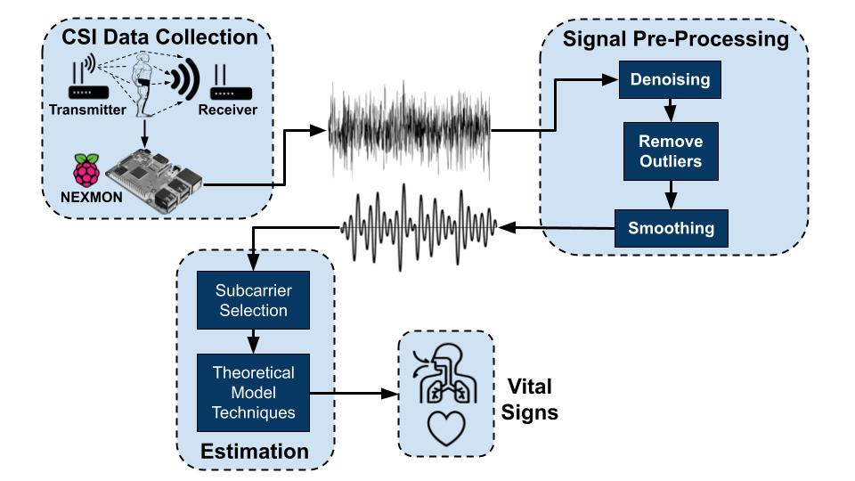

Projeto eHealth
Este projeto tem como objetivo principal coletar dados CSI através de dispositivos transmissores e receptores Wi-Fi. Posteriormente esses dados forneceram informação para a estimação de sinais vitais, detecção de atividade humana ou reconhecimento de gestos faciais. Para atingir esse objetivo, realiza-se uma pesquisa descritiva de abordagem quantitativa. A análise realizada levará em consideração a similaridade entre os dados coletados frente a dados coletados por outros dispositivos..
